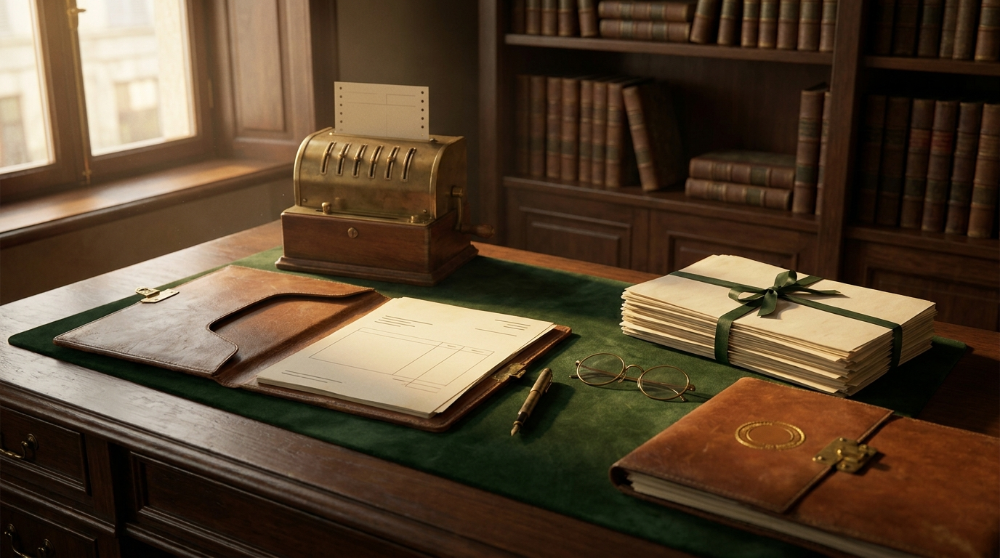

Falsa partita IVA: gli indici della subordinazione secondo la Cassazione
Una partita IVA non basta a qualificare un rapporto come autonomo. Quando orari fissi, compenso stabile e assenza di strumenti propri rivelano una vera subordinazione, il lavoratore può chiedere la riqualificazione del contratto. La Cassazione ha individuato indici precisi: vediamo quali sono e cosa comportano per lavoratori e datori.

Il fatto: la sostanza prima della forma
La partita IVA, da sola, non determina la natura di un rapporto di lavoro. Il diritto del lavoro guarda alla sostanza concreta della prestazione, non all'etichetta scelta dalle parti. Quando un collaboratore formalmente autonomo lavora di fatto come un dipendente, si parla di falsa partita IVA: un'autonomia solo apparente che maschera un rapporto subordinato.
La distinzione non è teorica. Dalla qualificazione discendono diritti retributivi, contributivi e di stabilità del posto che il lavoratore autonomo non ha. Per questo la giurisprudenza ha costruito nel tempo una serie di indicatori utili a smascherare la finzione.
Inquadramento normativo
Il riferimento di base è l'art. 2094 del Codice civile, che definisce il lavoratore subordinato come chi si obbliga a collaborare prestando il proprio lavoro alle dipendenze e sotto la direzione dell'imprenditore. L'elemento centrale è dunque l'assoggettamento al potere direttivo, organizzativo e disciplinare del datore.
La Corte di Cassazione ha precisato che, quando questo elemento non emerge in modo netto, occorre valutare una pluralità di indici sussidiari. Tra le pronunce di riferimento: l'ordinanza n. 16013/2022, le sentenze n. 23846/2017, n. 20367/2014 e, più risalente ma ancora attuale, la n. 9251/2010. Il principio comune è che nessun indice è decisivo da solo: rileva il quadro complessivo della prestazione.
Gli indici della subordinazione
La giurisprudenza individua alcuni segnali ricorrenti. Il primo è l'osservanza di un orario di lavoro fisso e predeterminato: chi è davvero autonomo organizza il proprio tempo, chi è subordinato segue i turni imposti.
Il secondo è il compenso fisso e periodico, sganciato dal risultato e simile a una retribuzione mensile. Segue l'assenza di rischio economico in capo al collaboratore, che non investe né sopporta perdite.
Rileva poi l'utilizzo di strumenti e mezzi forniti dal committente: postazione, software, attrezzature. Un autonomo lavora di norma con beni propri. Contano infine l'inserimento stabile nell'organizzazione aziendale, l'esecuzione delle direttive ricevute e l'esclusività della prestazione a favore di un solo committente.
Un esempio chiaro emerge dalla casistica sulle addette alle scommesse: turni rigidi, postazioni dell'agenzia, compenso fisso e direttive costanti hanno portato i giudici a riconoscere la natura subordinata del rapporto, nonostante la formale partita IVA.
Implicazioni pratiche
Per il lavoratore, la riqualificazione del rapporto apre alla pretesa delle differenze retributive maturate, al versamento dei contributi previdenziali, alle ferie, alla tredicesima e, nei casi previsti, alla tutela contro il licenziamento illegittimo.
Per il datore di lavoro, il rischio è rilevante: oltre alla condanna a pagare arretrati e contributi, possono aggiungersi sanzioni amministrative e accertamenti da parte dell'Ispettorato del lavoro e dell'INPS. La qualificazione formale del contratto non offre alcuna protezione se i fatti raccontano un'altra storia.
Va ricordato che l'esito di ogni controversia dipende dalla valutazione concreta degli elementi del singolo rapporto. Non esistono automatismi: il giudice pesa caso per caso il complesso degli indici.
Cosa fare in concreto
- Documenta la realtà del rapporto: orari, comunicazioni, direttive ricevute, fatture, mezzi utilizzati. La prova scritta è decisiva.
- Verifica se la tua prestazione presenta più indici di subordinazione tra quelli indicati: un solo elemento raramente basta, una concentrazione sì.
- Conserva ogni traccia del compenso percepito e della sua periodicità, utile a dimostrare la natura retributiva.
- Agisci tempestivamente: i diritti retributivi e contributivi sono soggetti a termini di prescrizione da non trascurare.
- Richiedi una valutazione professionale prima di avviare qualsiasi azione, per misurare la solidità della posizione.
Consigliamo, sia al lavoratore sia all'azienda, di esaminare il rapporto alla luce di questi criteri prima che un contenzioso lo imponga. Una verifica preventiva permette spesso di regolarizzare o ridefinire il rapporto evitando esposizioni più gravose.
---
*Contributo informativo a cura di Tamburro & Partners - Avv. Giuseppe Tamburro. Non costituisce parere legale.*
Ogni storia di lavoro ha i suoi tempi.
Se gestisci HR e vuoi un confronto su contenzioso, ispezioni o licenziamenti, scrivi allo studio. Ti rispondiamo entro un giorno lavorativo.